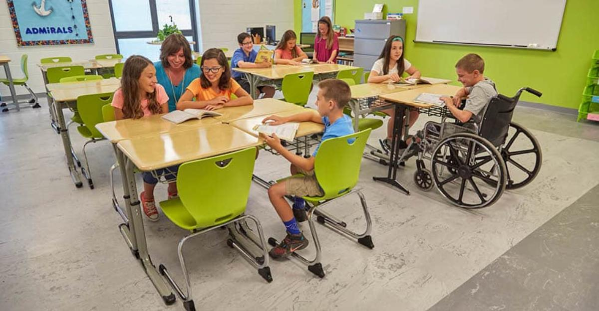
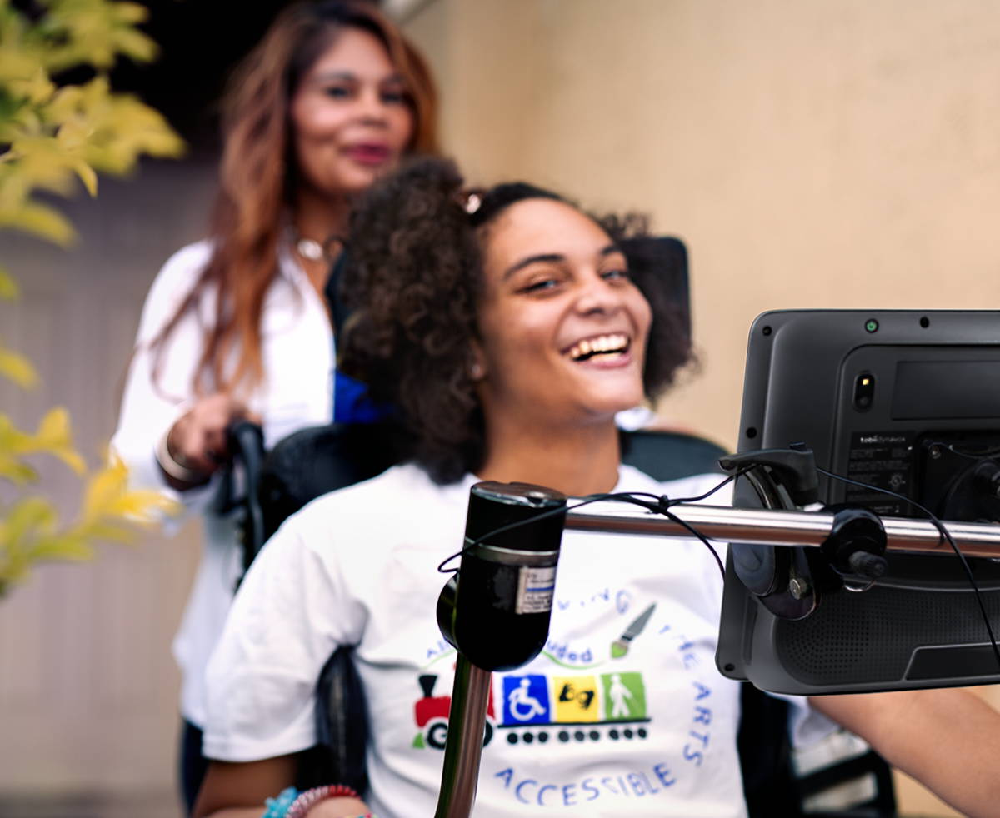

Out of My Mind
Out of My Mind by Sharon M. Draper is a powerful story exploring themes of courage, hope, and the unbreakable human spirit. This book follows Melody Brooks, an eleven-year-old girl with cerebral palsy who has a sharp memory and a sharper mind, as she navigates a world not built for her in a fight to be heard.
Explore the StoryAbout This Book
Out of My Mind is a groundbreaking novel that encourages its readers to look beyond first impressions and recognize the humanity and brilliance contained in every person.
Awards: New York Times Bestseller, Multiple Coretta Scott King Award considerations
Recommended for: Ages 10-13, Grades 5-8[1]
This remarkable story was on the New York Times bestseller list for over three years and has impacted millions of readers with its brutally honest depiction of disability, inclusion, and the universal desire to be understood.
Contextual Information

Historical and Social Context
Out of My Mind was published in 2010, a time of growth and change regarding societal views of disability, yet still a time of prejudice and second glances. The novel itself takes place during the awkward middle-ground of this century's view of disability, and both the educational and societal landscapes are reflective of that.[4]
Educational Context
The story challenges several critical "norms" in special education:
- Inclusion vs. Segregation: The debate over whether students with disabilities should be educated in separate classrooms or included in general education
- Assumptions about Intelligence: How physical disabilities are often mistakenly equated with cognitive limitations
- Assistive Technology: The emergence of communication devices that give voice to non-verbal individuals
- Implicit Bias of Disability: How average people treat and react to, even subconsciously, those with disabilities.
Cultural Significance
Draper's novel came at a time when representation of disability in literature was few and far between. The book:
- Challenges stereotypes about cerebral palsy and disability intelligence
- Encourages seeing the person beyond the disability
- Highlights the importance of access to communication
- Addresses bullying and social exclusion
Relevance
The themes remain relevant today as schools and society fight towards true inclusion and as assistive technology continues to evolve, giving more people like Melody their own Medi-Talker.
Characters

Melody Brooks
Protagonist • Age 11An eleven-year-old girl with cerebral palsy, she cannot speak or walk but has an excellent memory and a brilliant mind. She fights every day to prove her intelligence and her place in a world unaccepting.
Mental
She has a photographic memory, processes information extremely fast while being deeply analytical with the ability to comprehend language, music, and patterns with amazing clarity.
Physical
Vulnerable because of her physical condition, Melody relies on others for basic care despite being so mentally capable.
Moral
Because of her own situation, she is very empathetic towards others and fights for fairness.
Mrs. Violet Valencia (Mrs. V)
Neighbor & Advocate • Former Special Ed TeacherA neighbor and an advocate, she is a former special education teacher who sees beyond Melody's appearance and into her vast ability.
Mental
With the development of the initial talking board and the Medi-Talker, Mrs V. is exceptionally ingenious in creating brilliant solutions.
Physical
Always eager to help, she is very energetic.
Moral
One of the few people who understand Melody, she is uniquely empathetic to the invisible internal struggle that Melody battles every day.
Rose Spencer
Classmate • Popular StudentA popular girl in Melody's class, she is Melody's first real friend and connection, but later reveals the effects of betrayal and fake friendship.
Mental
Calculating and very socially aware, Rose grasps social dynamics well but often lets principles slip for convenience.
Physical
Privileged from being unburdened, Rose has a hard time fully understanding Melody's condition.
Moral
Inconsistent in her morals, Rose will show kindness and love at times but crumble relationships under pressure.
Diane Brooks
Mother • Primary CaregiverAs Melody's mother, Diane is Melody's rock and support; one of the few people who truly understand her.
Mental
Similar to Mrs. V, Diane is exceptionally creative in creating solutions for Melody, as she has been by her side from day one.
Physical
Always taking care of Melody's needs and getting her in and out of wherever she goes, Diane is strong.
Moral
Melody is never alone with her mother always being fiercely defensive for her daughter's dignity and encouraging her independence.
Setting
Geographic Location
The novel takes place in Ohio, in a modern-day American suburban community. While the specific city is not known, the setting shows a typical American town with both inclusive and segregated education and facilities.[5]
Time Period
The story is set in the early 2000s (approximately 2002), when Melody is eleven years old and in fifth grade. This period is significant because:
- Assistive technology in communication was growing but was still relatively new
- Inclusive schooling was more common but not yet universal
- Society's understanding of disability was advancing but was still limited by stereotypes
Primary Settings
1. Spaulding Street Elementary School
This is the educational setting where Melody spends her school days. The school features:
- Room H-5: This is the special education classroom where Melody spends her initial years, and is filled with students with various disabilities
- Inclusion Classrooms: Where Melody is eventually brought along for some classes
2. Melody's Home
Her home is a warm, loving environment where Melody feels safe and supported. The home has:
- Her bedroom, filled with books (her love)
- A living room and a kitchen where Melody interacts with her family
- The safety of a place where she can be herself without judgment
3. Mrs. V's House
The home of Melody's neighbor and secondary care-giver. She receives education and tremendous support here.
Atmospheric Details
Draper uses strong imagery to create vivid scenarios, particularly focusing on:
- Conversation that Melody hears but cannot respond to
- The frustration of physical limitations in inaccessible buildings
- The safety of inclusive spaces versus the uncertainty of exclusion
Tone
The leading tone of Out of My Mind is one of alienation. In the beginning, Draper creates a strong feeling of isolation. Melody is mentally present, being sharp, observant, and brilliant, yet treated as incapable because of her physical disability. This divide between reality and stereotypes develops the novel's heavy emotional weight.
How It Began
- In the school: Teachers talked about Melody, not to her, and lessons in H-5 are simplified despite her photographic memory and sharp mind.
- In social spaces: Peers ignore her being there or act kind without any connection
- In narrative voice: Melody's internal monologue contrasts starkly with her external silence
How This Affects The Book
This tone is more than fluff or texture: it has meaning. Because readers can feel Melody's alienation, we're challenged to examine our own thoughts on ability, intelligence, and value. The novel makes a clear point: Who gets to be seen? Who gets to be heard?
Point of View
Out of My Mind is told by Melody Brooks herself, in the first-person point of view and the past tense. This narrative choice is crucial to the novel: it places readers directly inside Melody's consciousness, overriding the assumptions others make about her from the outside.
What It Reveals
Because it is told in Melody's own voice, we are granted unfiltered access to all dimensions of her reality:
- Her Thoughts: Her monologue is sharp, observant, and witty, and most importantly, it is loud, standing in contrast to her silence on the outside.
- Her Abilities: Her photographic memory, rapid comprehension, and analytical mind: all capabilities always overlooked by teachers and peers.
- Her Frustrations: The anger of being underestimated, the anger of being ignored, and the alienation when the world judges her by her body rather than her brain.
Because it is written in the past tense, Melody reflects on both raw childhood emotion and past mistakes. This allows the story to explore vulnerability and insight while preserving her voice's authenticity.
Plot

Exposition
The novel opens by immediately establishing the biggest antagonist throughout the book: eleven-year-old Melody Brooks is physically unable to speak or move freely (p. 11). While her parents take care of her daily physical care, the narrative shows her true nature: mentally sharp, observant, and extremely competent. Her body traps her, but she is smart.[7]
Rising Action
Melody's journey is driven by her experience with the medical (p. 18) and educational (p. 27) systems, both of which assume her disability is immediately intellectual incapacity. As her inability to communicate becomes a central source of tension, she meets Mrs. V, a neighbor and former teacher who sees her Melody for who she is. A major turning point occurs when Melody receives the Medi-Talker (p. 138), granting her the ability to finally communicate. Suddenly, those around her begin to perceive her as an actual person (p. 143). Because of her smarts, she auditions for the academic Whiz Kids team and earns a spot, defying the beliefs of others (p. 190), and secures a place on the trip to Washington, D.C.[7]
Climax
The narrative reaches a climax with two conflicts: the Whiz Kids and Penny. The Whiz Kids team leaves for Washington, D.C. without Melody after a silent, collective agreement not to call her: a deliberate betrayal led, surprisingly, by Rose (p. 291). This soul-shattering experience is compounded by Penny's near-death experience (p. 276), which takes away Melody's feelings of safety and forces her to face vulnerability.[7]
Falling Action
After the Whiz Kids team gets back, Rose and the team offer apologies out of social guilt more than genuine sincerity. Melody is left to navigate the dissolution of her trust, fighting with tarnished self-worth after struggling so hard to be seen, only to be discarded by the very people who claimed to support her.[7]
Resolution
Penny lives with no major injury, and peace is brought to the Brooks household (for once). More significantly, Melody comes to a profound internal conclusion: despite the inability of the world to understand and see her, she knows to her core that she is human. The novel concludes with a strong declaration of self-peace and freedom.[7]
Works Cited
Badge numbers match the in-text citations. Each badge returns to the most recently followed reference.